Famous Historical Places Across Indian States
Uttar Pradesh

Taj Mahal
Located in Agra, the Taj Mahal is a stunning mausoleum built by Emperor Shah Jahan in memory of his wife Mumtaz Mahal. It is a symbol of love and one of the Seven Wonders of the World.
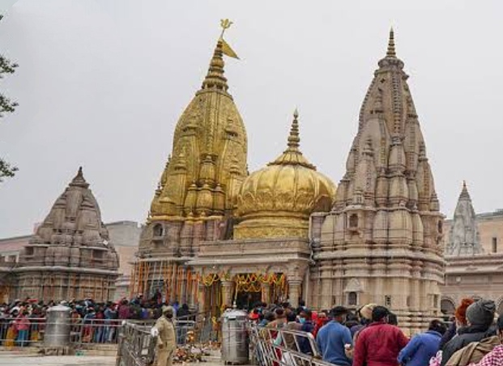
Kashi Vishwanath Temple
Located in Varanasi, is one of the holiest Shiva temples in India. Revered as a Jyotirlinga, it holds immense spiritual significance and attracts millions of devotees annually.
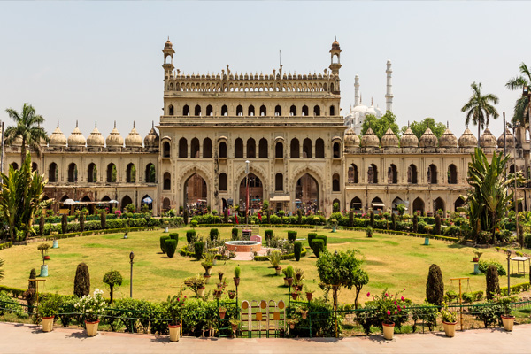
Bada Imambara
Located in Lucknow, India, is a grand 18th-century architectural marvel built by Asaf-ud-Daula. Known for its central hall without support beams, it also features a fascinating labyrinth called Bhool Bhulaiya.
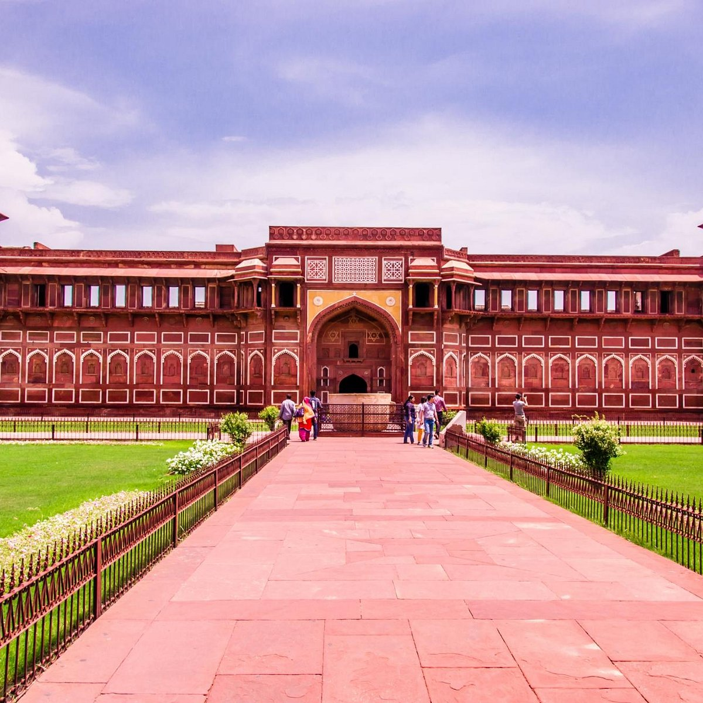
Agra Fort
A UNESCO World Heritage Site, Agra Fort is a historical fort in Agra, known for its architectural grandeur and history during the Mughal era.
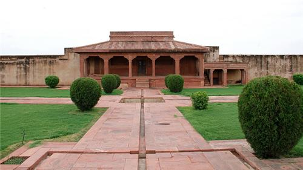
Diwan-I-Aam, Fatehpur Sikri
Served as the public audience hall of Emperor Akbar. This open courtyard, surrounded by stunning Mughal architecture, was a space for addressing the concerns of the common people.

Rumi Darwaza
Located in Lucknow, is a magnificent 18th-century gateway built under Nawab Asaf-ud-Daula. It exemplifies Awadhi architecture and is often referred to as the "Turkish Gate."
Delhi
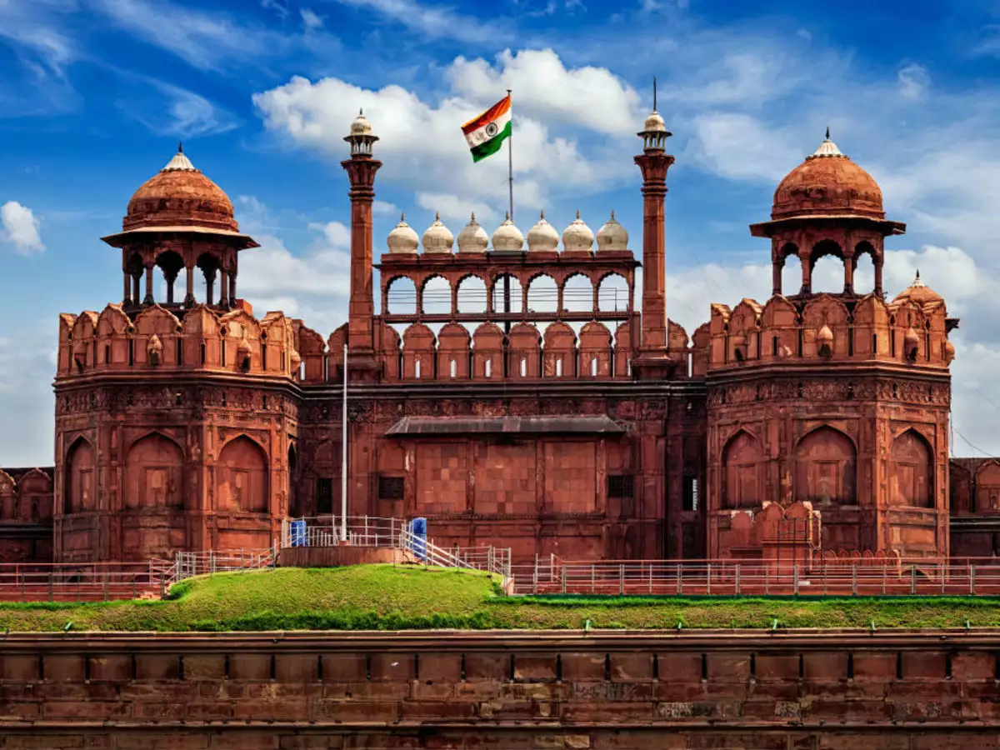
Red Fort
Situated in Delhi, the Red Fort was the main residence of Mughal emperors. Its red sandstone walls are iconic and steeped in history.
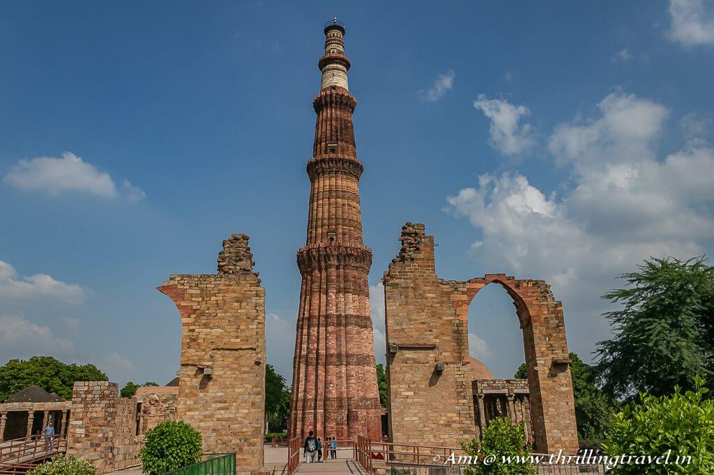
Qutub Minar
The Qutub Minar in Delhi is a UNESCO World Heritage Site and the tallest brick minaret in the world. It represents Indo-Islamic architecture.
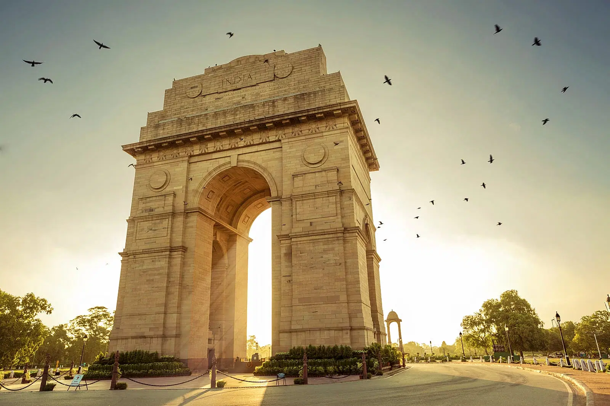
India Gate
A war memorial located in New Delhi, India Gate is a tribute to the soldiers who lost their lives during World War I.

Jantar Mantar
Situated in Delhi, is an astronomical observatory built in the 18th century by Maharaja Jai Singh II. It features a collection of large instruments used to measure time, track celestial bodies, and observe astronomical events.
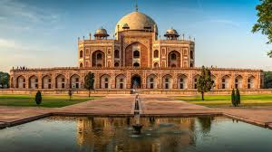
Humayun’s Tomb
Situated in Delhi, is a stunning example of Mughal architecture, built in the mid-16th century for Emperor Humayun. It is known for its grand structure, beautiful gardens, and the first garden tomb on the Indian subcontinent.

Jama Masjid
Situated in Delhi, one of the largest mosques in India, was built by Mughal Emperor Shah Jahan in the 17th century. Its stunning architecture, vast courtyard, and majestic minarets make it a prominent symbol of Mughal grandeur.
West Bengal

Victoria Memorial
Located in Kolkata is a majestic marble building built in honor of Queen Victoria, showcasing a blend of British and Mughal architectural styles. Surrounded by lush gardens, it now serves as a museum and a symbol of Kolkata's colonial history.
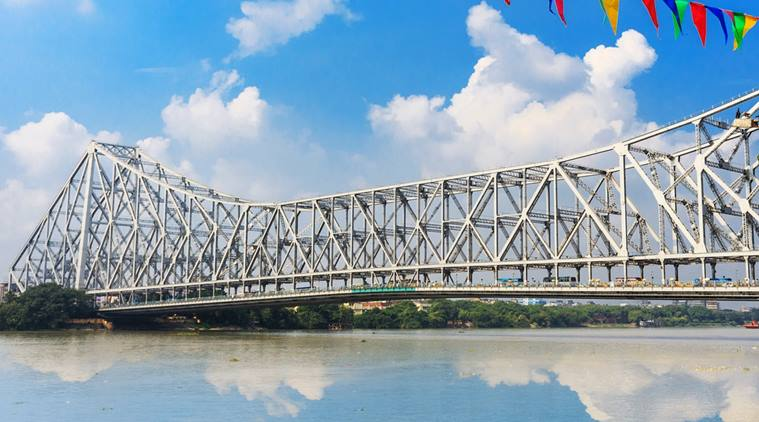
Howrah Bridge
An iconic cantilever bridge in Kolkata, spans the Hooghly River and connects the city to its industrial suburbs. Completed in 1943, it is one of the busiest bridges in the world, symbolizing Kolkata's engineering prowess.

Belur Math
Located in Kolkata, is the headquarters of the Ramakrishna Order and a renowned spiritual center. Its serene architecture blends Hindu, Christian, and Islamic elements, symbolizing religious unity and harmony.
Rajasthan
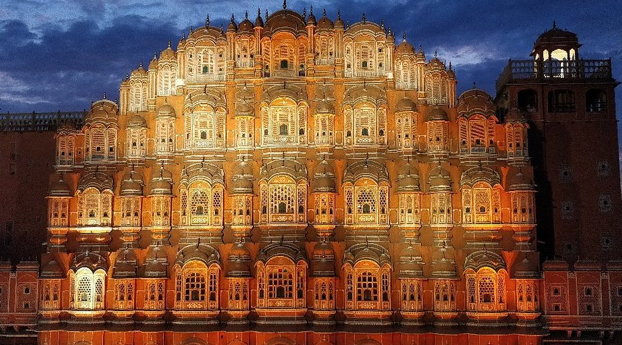
Hawa Mahal
Located in Jaipur, Hawa Mahal is a palace known for its unique honeycomb structure with 953 small windows. It was built for royal women to observe street festivals unseen.
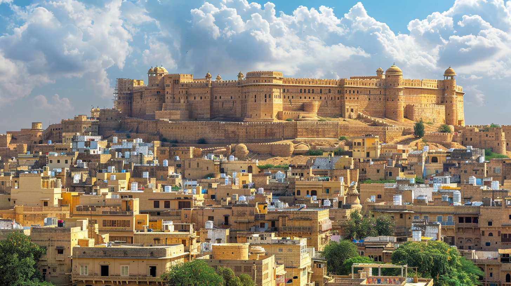
Jaisalmer Fort
A breathtaking fort in the heart of the Thar Desert, Jaisalmer Fort is one of the largest forts in the world.

Amber Fort
Located in Jaipur, is a majestic hilltop fort known for its blend of Hindu and Mughal architectural styles. Built by Raja Man Singh in the 16th century, it features grand courtyards, intricate mirror work, and stunning views of the surrounding landscape.
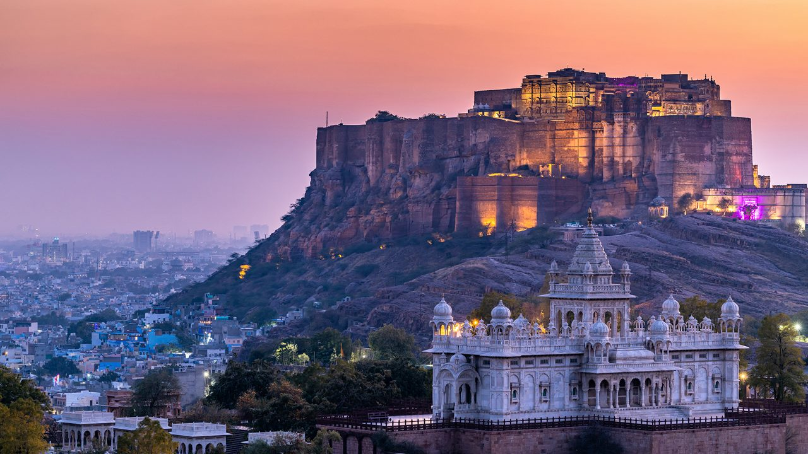
Mehrangarh Fort
Situated in Jodhpur, is one of the largest and most impressive forts in India, built in the 15th century by Rao Jodha. Its towering walls, intricate carvings, and expansive courtyards offer a glimpse into Rajasthan's royal history.
Maharashtra

Gateway of India
Located in Mumbai, this iconic arch-monument was built to commemorate the landing of King George V and Queen Mary.

Ajanta Caves
Ajanta Caves are rock-cut Buddhist caves famous for their paintings and sculptures, dating back to the 2nd century BCE.
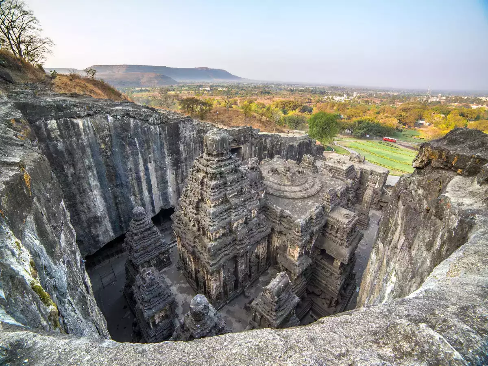
Ellora Caves
Ellora Caves in Maharashtra are a UNESCO World Heritage Site known for their monumental caves representing Hindu, Buddhist, and Jain art.

Elephanta Caves
located on Elephanta Island near Mumbai, are a UNESCO World Heritage site known for their rock-cut sculptures and ancient Hindu temple complex.
Madhya Pradesh
Khajuraho Temples
Located in Madhya Pradesh are famous for their stunning architecture and intricate sculptures, including erotic art, reflecting the Chandela dynasty's cultural heritage.

Sanchi Stupa
Located in Madhya Pradesh, is one of the oldest stone structures in India, built by Emperor Ashoka in the 3rd century BCE. It is a significant Buddhist monument, known for its detailed carvings and symbolic gateways.

Gwalior Fort
Gwalior Fort, dating back to the 8th century, is known for its grand architecture and historical significance. It houses notable structures like Man Singh Palace and Gujari Mahal.
Tamil Nadu

Brihadeeswarar Temple
A UNESCO World Heritage Site, this Chola dynasty temple in Thanjavur is a masterpiece of Dravidian architecture.

Mahabalipuram
Famous for its rock-cut sculptures and Shore Temple, Mahabalipuram is a historical town and UNESCO World Heritage Site.

Meenakshi Temple
The Meenakshi Temple in Madurai is a stunning example of Dravidian architecture, dedicated to Goddess Meenakshi and Lord Sundareswarar. Known for its intricately sculpted towers, it is a major pilgrimage site and cultural landmark.
Karnatka

Hampi
Hampi, a UNESCO World Heritage site in Karnataka, is renowned for its ancient ruins and stunning temples, once part of the Vijayanagara Empire. The site features remarkable structures like the Virupaksha Temple and the Stone Chariot.

Mysore Palace
Mysore Palace, a grand royal residence in Karnataka, is known for its Indo-Saracenic architecture and ornate interiors. It serves as a symbol of the Wodeyar dynasty and attracts visitors with its stunning beauty and historical significance.
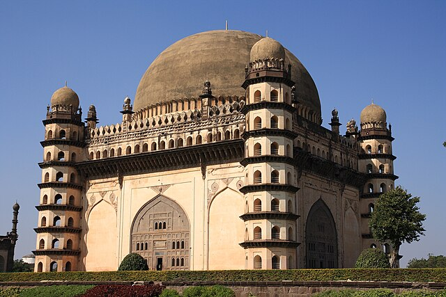
Gol Gumbaz
Located in Bijapur, is a massive mausoleum built in the 17th century for Sultan Muhammad Adil Shah. Its iconic dome is one of the largest in the world and is known for its remarkable acoustics.

Badami Caves
Located in Karnataka, are a group of rock-cut temples dating back to the 6th century. Known for their intricate carvings and ancient architecture, they reflect the religious diversity of the time, including Hindu, Jain, and Buddhist influences.
Gujrat

Modhera Sun temple
Located in Gujarat, built in the 11th century, is dedicated to the Sun God and showcases exquisite Solanki-era architecture. Known for its intricate carvings, it features a grand stepwell and a beautifully designed assembly hall.

Laxmi Vilas Palace
Located in Vadodara, Gujarat, is a grand residence built in the 19th century for the Maratha rulers, known for its impressive Indo-Saracenic architecture.

Rani ki Vav
Located in Patan, Gujarat, is an ancient stepwell built in the 11th century, known for its intricate sculptures and architectural beauty. A UNESCO World Heritage site, it showcases the grandeur of Solanki-era craftsmanship.
Punjab

Golden Temple
Located in Amritsar, is the holiest shrine of Sikhism, known for its stunning gold-plated structure and serene Amrit Sarovar. It symbolizes equality and spiritual peace, welcoming people of all faiths.

Jallianwala Bagh
Located in Amritsar is a historic site commemorating the 1919 massacre where hundreds were killed during a peaceful protest. It stands as a somber reminder of India's struggle for independence.

Sheesh Mahal
Sheesh Mahal in Jaipur, located within the Amber Fort, is a dazzling hall known for its intricate mirror work and stunning craftsmanship. Its walls and ceilings, adorned with tiny mirrors, create a sparkling effect when illuminated.